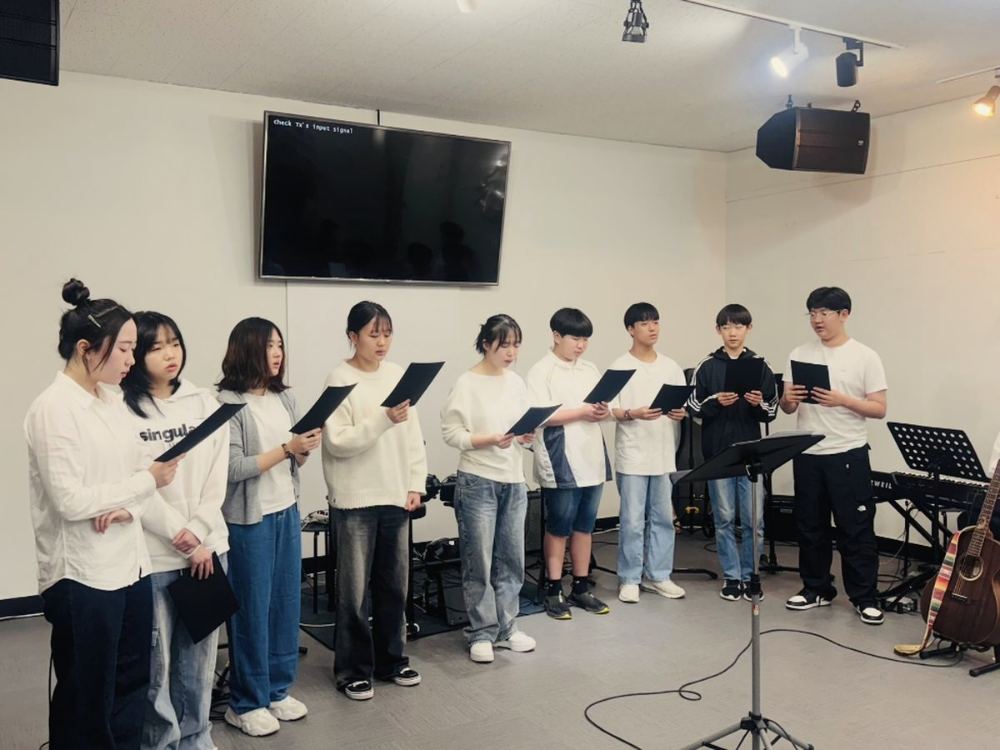

환영합니다
하나님이 주인 되시는 건강하고 행복한,
높은뜻 하나되는 교회에 오신 여러분을 환영하고 축복합니다.



새가족 등록과정 안내
- STEP ①등록카드 작성작성 후 헌금함에 넣어 주세요
- STEP ②새가족 교육4주 과정
- STEP ③새가족 환영예배 중 환영인사
- STEP ④공동체 편성교인 등록 후 목장 편성
방문 전에 등록카드를 미리 작성하고 싶으신가요?남겨 주시면 교회에서 연락드리겠습니다.
새가족 FAQ
높은뜻 하나되는 교회에 처음 오신 분들이 가장 많이 하시는 질문과 답변을 정리했습니다.
더 궁금하신 점은 예배 후 목회자에게 편하게 문의해 주세요.
새가족등록새가족 등록 절차가 궁금합니다.
환영합니다!
예배 전후에 등록카드를 작성해서 헌금함에 넣어 주시면 담당 목회자가 연락을 드립니다.
등록을 원하시는 분은 4주 과정의 새가족 교육과정을 이수하셔야 합니다.
예배 전후에 등록카드를 작성해서 헌금함에 넣어 주시면 담당 목회자가 연락을 드립니다.
등록을 원하시는 분은 4주 과정의 새가족 교육과정을 이수하셔야 합니다.
교회 정보높은뜻 하나되는 교회는 어느 교단 소속인가요?
대한예수교장로회 통합측 소속입니다.
교회방향높은뜻 하나되는 교회가 가장 중요하게 추구하는 방향은 무엇인가요?
한반도 선교와 통일을 위해 준비하라는 하나님의 부르심에 순종하여 세워진 교회로서,
더 깊이 예배하고, 기도의 분량을 채우며, 말씀을 배우고, 헌신의 기쁨을 누리는 교회를 추구합니다.
더 깊이 예배하고, 기도의 분량을 채우며, 말씀을 배우고, 헌신의 기쁨을 누리는 교회를 추구합니다.
다음세대아이들과 함께 예배드릴 수 있나요?
네. 주일 오전 10시 30분에 원키즈 유치부, 오전 10시에 원키즈 초등부와 원틴즈 중고등부 예배가 있습니다.
매월 첫째 주일예배는 온세대 예배로 아이들과 함께 예배드립니다.
매월 첫째 주일예배는 온세대 예배로 아이들과 함께 예배드립니다.